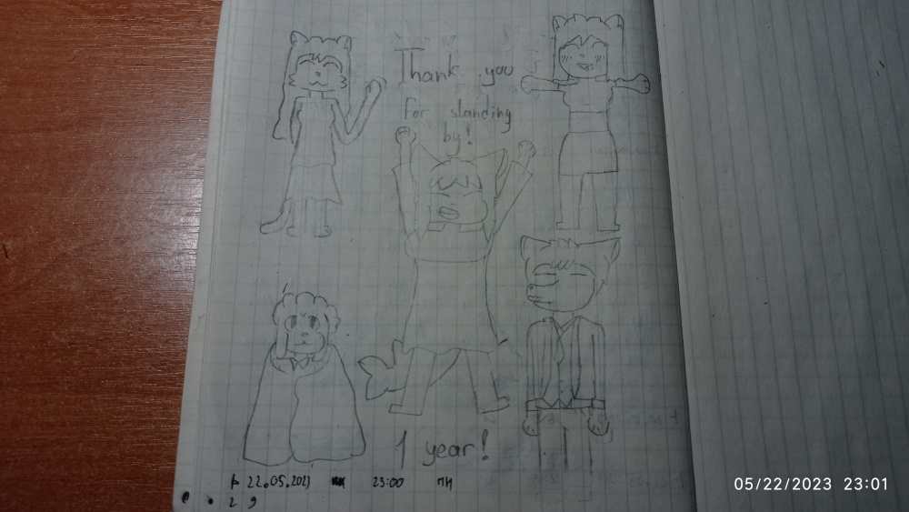
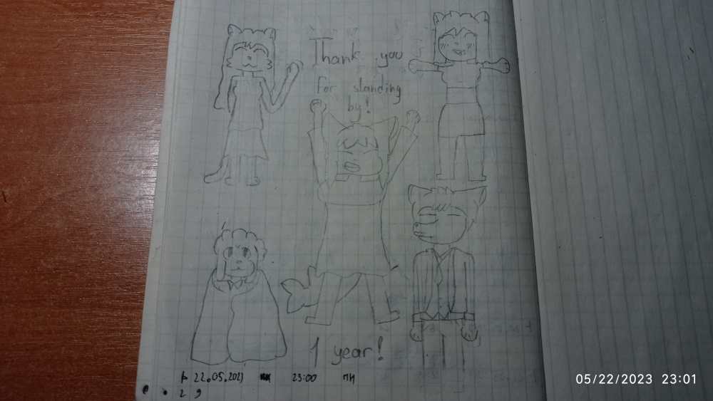

Jania

Jania is an Anthropomorphic cat, what is the fursona of Kiwi Developer
Profile:
Biological class: Cat
Age: 17
Sex: Female
Intedefication in community:
Traits: Brave (mainly near friends), Patient (in tricky situations), Manipulative (mainly for rich persons)
Date of created: 07.10.2022(21.06.16M)
Country where born: Fur
Parents:
Mother: Kate
Father: Jonaton
Intrestings: trade bureaucracy, topograph
Work: Student of Trade School in country Art
Mother of Jania, Kate wanted, what she became a trade bureaucracy, because Kate thought, what their family will pay off debts.
Jania loves to make friends. She has above 10 friends. Jania joined to hanging sessions 8 times on average for a week. But not all her friends trusted her, Diana was the riches person in sessions, and every single time, Jania tried to get a money from her. Diana - "Jania wants my money, I don't know, what's methodes she decide to take money from me. I was scared, when Jania was appeared in clothes shop".
She loves to travel around the country Anime, because, Jania was there, when she had 14 years old. Jania was so impressed with it, what decided to travel with her friends, but she hasn't enought of money for that.
Jania loves to be in the center of the attention. It because she loves to get attention and be accepted. When someone is in the center of the attention, then she's trying to be near the object of public attention. Some Jania's friends says, what "If you see something Intresting, then she will appear nearby".
Jania sometimes can tell her friends about investiments. She think, what this should be intresting for her friends, especially for Mitchell. Mitchell - "That's why I'm still be friend with Jania, she can tell me about the investiment world and cheer me to make my first investiment".
One time, Jania decided to visit Kiwuar, with her friends, but, unfortunatly, nobody didn't accept to visit him. Jania started to argue with her friends. It's because nobody wanted to visit Kiwuar "Why we should go to the Kiwuar? He's soo boring. Moreover, he suggest us to go to a plain, and that's disgusting..." but she didn't listened them. Jania - "Are you going to regect him, as my friend, I think no".
One time, Jania was with friends in another town, but it was crowded. She wanted to try an attraction and ride with her friends. That's was fun, but one time, she saw, what people are coming to one place. A famous person is came to the attraction. But was soo much people, so, Jania decided to go back to her friends. When she started to go to her friends, she couldn't found them. Jania was patient, and started to go away from crowd. Then, she started to connect to Mitchell and said, what she's waited near road. Her friend come here and was happy to found their friend.
One time, Jania heard something very far. She decided, what need to get out of there, and go to the furthest place, as possible. When she with her parents still preparerad, Jania saw Kiwuar, what looks scared. After preperation, they started to get out of there. After long time of forced travelling, they came to Art.
She saw a light under herself. Jania was shocked about that. Suddently, metal plates was appeared and surrounded her. Jania's mom, Kate was scared, and tried to save her from being stuck, but it was too strong. Kate cried about it, but Jania relieved her. Kate - "I will missing you". The metalic plates was became a rocket, what will be launched soon. Jania heard some sound - "TARGET - ESC REGION. CONNECTION DETECTED. STARTING ROCKET PROTOCOL SYSTEM. TURNING ON ENGINES. LAUNCH". Jania felt load out of surface, and suddently felt a huge load, directed her to the bottom of the rocket. Jania had fainted. [next]
... [next]
She woke up in the different place, but still in the rocket. It's was very scientific: a lot of chambers, devices, etc. Jania - "Where am I?". Jania felt brakes. The rocket opened up, and someone said - "JANIA. GET OFF THE ROCKET AND STAND ON THE PLATE". Jania - "Ok...". She decided to stant from the rocket, but not on the plate, because Jania wanted to inspect the place. Jania saw creatures, what are a lot different between her species. Also, she saw a test chamber, what inventing new technology. At least, there's not comfort there, but that's okay. Someone - "JANIA. STAND ON THE PLATE, OR WE WILL DESINTEGRATE YOU". Jania - "Fine". She stand on the plate. Jania was started to fly, and... [next]
"Turning on the initializion process... Done! Need more...". [next]
She saw someting, but couldn't describe. Later, the "process" had done and she was fell down. Jania was hurted. Then, someone said - "JANIA. GET IN THE ROCKET". Jania - "I don't forget the place...". She sat down in the rocket. She again fainted after a huge load. [next]
... [next]
Jania woke up, and got, what she is free. She saw, what around her rocket fragments, what slowly disolving. Jania saw her mom, Kate, what sleep. She decided, to wake up Kate. Jania - "Wake up, I'm back". Kate - "Oh dear! Thanks mindness, what you're back!" Kate started to crying and hugging her. [But we know, Jania has been becoming a new fursona of Kiwii Devulopir since now]
After a long time of being in Art, the war ended. Jania with her mom, Kate decided to arrive at Fur. There were a lot of ruins, especially in the north side of the country. There are a few people walking outside. Also there's a supply point, where all can get aid. They understood, their home survived, so they came to the home. Jania accepted and waited for her old gang to tell, what she cares about.
Gallery:


 

 [by @Uki7UqvfzqQJ36j]
[by @Uki7UqvfzqQJ36j]